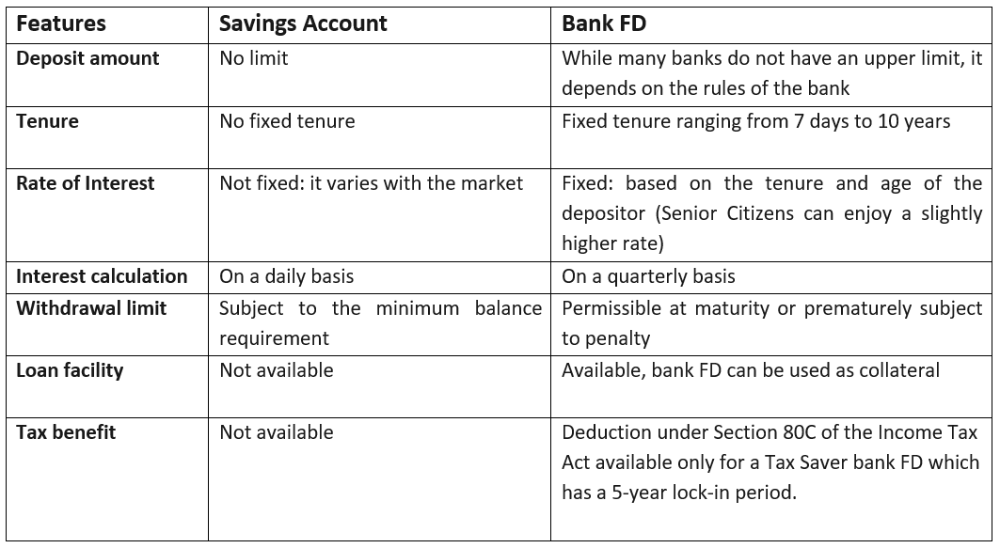

- Fixed Deposits
- Savings Account
Tools for Savings
What is Fixed Deposit (FD)?
Fixed deposit is a financial investment instrument offered by banks and NBFCs wherein investors can deposit money and get a high rate of interest than a normal savings account. It is a low-risk financial instrument that helps investors grow savings at a fixed rate of interest that is higher than the interest rates offered by savings accounts. The convenience of investing, along with the safety of your deposit, can help you plan your short-term and long-term financial goals with ease.
Why should you put money in FD?
Assured returnUnlike market-linked securities that may result in losses due to market volatility, fixed deposits provide an assured rate of return on investments.
Low minimum investment/deposit
If you want to inculcate an investment habit but do not have a large sum to do so, FDs are a good option because investment amounts can start as low as Rs. 500.
Liquidity
Premature withdrawal of FDs is permitted, although you will lose some interest in the missed duration.
Benefits of Compounding
With FD investments, you can earn interest on interest, thereby enjoying higher returns and faster multiplication of money
Easy process
FDs are the easiest instruments to invest in, both offline and online, through net banking or mobile banking.
Types of FD
Cumulative FDPay you the interest and the principal at maturity. The interest is reinvested every year. This means that you will not be eligible to receive regular interest pay-outs, instead you will receive a lump sum at the end of the FD tenure.
Non-cumulative FD
Will pay you interest at fixed intervals. You could choose to receive interest payments monthly, quarterly, half-yearly, or annually, depending upon your needs. This will give you a regular stream of income.
How is interest calculated on FD?
Depending upon whether you choose a cumulative or non-cumulative FD, the interest amount will vary. For instance, if you choose to invest ₹25,000 for 3 years at an interest rate of 7.1% per annum, a cumulative FD would have a maturity value of ₹30,712.
FD vs Savings a/c
Why should you care about Saving and Investing?
TIME VALUE OF MONEYTime value of money means that the value of money is different in different time periods. The value of money received today is more than the value of same amount receivable at some other time in future.
The difference in the value of money today and tomorrow is referred to as the time value of money.
Therefore, given a choice of receiving a sum of money today or in the future, a rational person will always choose to receive the money now as it has more value today than in the future.